전기철도산업기사 (2009-07-26 기출문제)
1과목: 전기자기학
1. 100MHz의 전자파의 파장은?
- 0.3[m]
- 0.6[m]
- 3[m]
- 6[m]
(정답률: 알수없음)

2. 다음 중 전기력선의 일반적인 성질로 옳지 않은 것은?
- 전기력선은 부전하에서 시작하여 정전하에서 그친다.
- 전기력선은 그 자신만으로 폐곡선이 되는 일은 없다.
- 전기력선은 전위가 높은 점에서 낮은 점으로 향한다.
- 도체 내부에는 전기력선이 없다.
(정답률: 알수없음)
3. 어떤 막대 철심이 있다. 단면적이 0.4[m2]이고, 길이가 0.8[m], 비투자율이 20이다. 이 철심의 자기 저항은 약 몇 [AT/Wb] 인가?
- 3.86×104[AT/Wb]
- 3.86×105[AT/Wb]
- 7.96×104[AT/Wb]
- 7.96×105[AT/Wb]
(정답률: 알수없음)
4. 송전선의 전류가 0.01초간에 10[kA] 변화할 때 송전선과 평행한 통신선에 유도되는 전압은? (단, 송전선과 통신선간의 상호유도계수는 0.3[mH]이다.)
- 3[V]
- 300[V]
- 3000[V]
- 300000[V]
(정답률: 알수없음)
5. 대전도체의 성질 중 옳지 않은 것은?
- 도체표면의 전하밀도를 σ[C/m2]이라 하면 표면상의 전계는
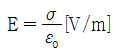
이다. - 도체 표면상의 전계는 면에 대해서 수평이다.
- 도체 내부의 전계는 0이다.
- 도체는 등전위이고, 그의 표면은 등전위면이다.
(정답률: 알수없음)
6. 일반적으로 자구(magnetic domain)를 가지는 자성체는?
- 유전체
- 강자성체
- 역자성체
- 비자성체
(정답률: 알수없음)
7. 저항 24Ω의 코일을 지나는 자속이 0.3cos800t[Wb]일 때 코일에 흐르는 전류의 최대값은?
- 10[A]
- 20[A]
- 30[A]
- 40[A]
(정답률: 알수없음)
8. 평행판콘덴서의 면적이 S[m2], 양단의 극판 간격이 d[m]일 때 비유전률 εs인 유전체를 채우면 정전용량[F]은? (단, 진공 중의 유전률은 εo이다.)
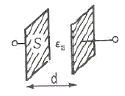
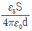
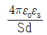
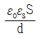
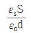
(정답률: 알수없음)
9. 고전압이 가해진 유전체 중에 공기의 기포가 이으면 유전체 중의 기포는 절연에 영향을 준다. 절연은 유전체의 유전율에 대하여 어떠한가?
- 유전율이 클수록 절연은 향상된다.
- 유전율이 작을수록 절연은 나빠진다.
- 유전율에는 무관계하다.
- 유전율이 클수록 절연은 나빠진다.
(정답률: 알수없음)
10. 다음 중 변위전류에 대한 설명으로 옳은 것은?
- 자석내에 자장의 변화에 의해서 생긴 전류
- 도체 중에 전자의 이동에서 생긴 전류
- 초전도체 중에 자장을 방해하는 전류
- 유전체 중에 전속밀도의 시간적 변화에 의한 전류
(정답률: 알수없음)
11. 25℃에서 저항이 10Ω인 코일이 있다. 70℃에서 코일의 저항[Ω]은? (단, 25℃에서 코일의 저항온도 계수는 0.004이다.)
- 10[Ω]
- 10.6[Ω]
- 11.2[Ω]
- 11.8[Ω]
(정답률: 알수없음)
12. 펠티에효과에 관한 공식 또는 설명으로 틀린 것은? (단, H는 열량, P는 펠티에 계수, I는 전류, t는 시간이다.)
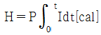
- 펠티에효과는 지벡효과와 반대의 효과이다.
- 반도체와 금속을 결합시켜 전자냉동 등에 응용된다.
- 펠티에효과란 동일한 금속이라도 그 도체 중의 2점간에 온도차가 있으면 전류를 흘림으로써 열의 발생 또는 흡수가 생긴다는 것이다.
(정답률: 알수없음)
13. 공기 중에서 무한 평면 도체 표면 아래의 1[m]떨어진 곳에 1[C]의 정전하가 있다. 전하가 받는 힘의 크기는?
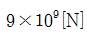
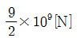
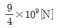
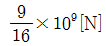
(정답률: 알수없음)
14. 같은 양, 같은 부호의 전하가 어느 거리만큼 떨어져 있을 때, 전하사이의 중점에 있어서의 전계[V/m]의 세기는?
- 0
- ∞
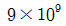
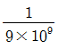
(정답률: 알수없음)
15. 전류의 세기가 I[A], 반지름 r[m]인 원형 선전류 중심에 m[Wb]인 가상 점자극을 둘 때 원형 선전류가 받는 힘은 몇 [N]인가?
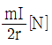
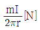
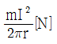
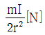
(정답률: 알수없음)
16. 서로 결합된 2개의 코일을 직렬로 연결하면 합성 자기 인덕턴스가 20mH이고, 한쪽 코일의 연결을 반대로 하면 8mH가 되었다. 두 코일의 상호인덕턴스는?
- 3[mH]
- 6[mH]
- 14[mH]
- 28[mH]
(정답률: 알수없음)
17. 평행판콘덴서의 극간거리를
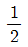
로 줄이면 콘덴서 용량은 처음 값에 비해 어떻게 되는가? 이 된다.
이 된다.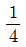
이 된다.- 2배가 된다.
- 4배가 된다.
(정답률: 알수없음)
18. 다음 중 벡터에 대한 계산식으로 틀린 것은?
- i·i=j·j=k·k=0
- i·j=j·k=k·i=0
- A·B=ABcosθ
- i×i=j×j=k×k=0
(정답률: 알수없음)
19. 어떤 코일의 인덕턴스를 측정하였더니 4H이고, 여기에 직류전류 I[A]를 흘려주니 이 코일에 축적된 에너지가 10J이었다면 전류 I는?
- 0.5[A]
- √5[A]
- 5[A]
- 25[A]
(정답률: 알수없음)
20. 내압과 용량이 각각 200V 5㎌, 300V 4㎌, 400V 3㎌, 500V 3㎌인 4개의 콘덴서를 직렬 연결하고 양단에 직류전압을 가하여 전압을 서서히 상승시키면 최초로 파괴되는 콘덴서는? (단, 콘덴서의 재질이나 형태는 동일하다.)
- 200V 5㎌
- 300V 4㎌
- 400V 3㎌
- 500V 3㎌
(정답률: 알수없음)
2과목: 전력공학
21. 다음 중 연가(transposition)의 효과로 거리가 먼 것은?
- 직렬공진의 방지
- 선로정수의 평형
- 대지정전용량의 감소
- 통신선의 유도장해의 감소
(정답률: 알수없음)
22. 그림과 같이 송전선이 4도체인 경우 소선 상호간의 기하학적 평균 거리는?
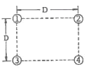
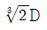
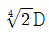
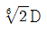
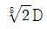
(정답률: 알수없음)
23. 전력계통에서 변압기의 유기기전력이 발생할 때 나타나는 고주파 중 제3고주파 및 제5고주파를 각각 제거 시키는 방법으로 다음 중 가장 적절한 것은?
- 제3고주파 및 제5고주파 모두 직렬리액터를 설치하여 제거할 수 있다.
- 변압기 결선 방식으로는 고조파를 제거할 수는 없다.
- 제3고조파는 전력용 콘덴서를 설치하여 제거하고 제5고조파는 직렬리액터를 설치하여 제거한다.
- 변압기 △ 결선 방식으로 제3고조파를 제거하고, 제5고조파는 직렬리액터를 설치하여 제거한다.
(정답률: 알수없음)
24. 최근 GIS설비에서 사용되고 있는 소호능력과 차단능력이 우수한 SF6 가스를 이용한 차단기는?
- 공기차단기
- 자기차단기
- 가스차단기
- 진공차단기
(정답률: 알수없음)
25. 그림과 같이 정수가 서로 같은 평행 2회선에서 일반회로 정수 Co는 얼마인가? (단, 그림에서 좌측은 송전단, 우측은 수전단이다.)
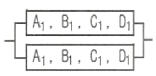
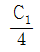
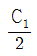
- 2C1
- 4C1
(정답률: 알수없음)
26. 전력계통에서의 안정도란 주어진 운전 조건하에서 계통이 안정하게 운전을 계속할 수 있는가의 능력을 말한다. 다음 중 안정도의 구분에 포함되지 않는 것은?
- 동태 안정도
- 과도 안정도
- 정태 안정도
- 동기 안정도
(정답률: 알수없음)
27. 중성점 접지방식 중 소호리액터 접지방식에서 공진조건
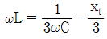
에서 xt는?- 선로 임피던스
- 변압기 임피던스
- 발전기 임피던스
- 부하설비 임피던스
(정답률: 알수없음)
28. 전선로에 댐퍼(damper)를 사용하는 목적은?
- 전선의 진동방지
- 전력손실 격감
- 낙뢰의 내습방지
- 많은 전력을 보내기 위하여
(정답률: 알수없음)
29. 일반적으로 수용가 상호간, 배전 변압기 상호간, 급전선 상호간 또는 변전소 상호간에서 각개의 최대부하는 그 발생 시각이 약간씩 다르다. 따라서 각개의 최대 수요 전력의 합계는 그 군의 종합 최대 수요 전력보다도 큰 것이 보통이다. 이 최대 전력의 발생 시각 또는 발생 시기의 분산을 나타내는 지표는?
- 전일효율
- 부등률
- 부하율
- 수용률
(정답률: 알수없음)
30. 원자로에서 카드뮴 봉(rod)에 대한 설명으로 옳은 것은?
- 생체차폐를 한다.
- 냉각재로 사용된다.
- 감속재로 사용된다.
- 핵분열 연쇄반응을 제어한다.
(정답률: 알수없음)
31. 가공전선로에 사용하는 현수애자련이 10개라고 할 때 다음 중 전압 부담이 최소인 것은?
- 전선에서 8번째 애자
- 전선에서 5번째 애자
- 전선에서 3번째 애자
- 전선에서 1번째 애자
(정답률: 알수없음)
32. 어느 변전소에서 합성 임피던스가 0.4%(10000[kVA]기준)인 곳에 시설할 차단기의 소요차단 용량은?
- 250[MVA]
- 400[MVA]
- 2500[MVA]
- 4000[MVA]
(정답률: 알수없음)
33. 다음 중 고압 수전 설비를 구성하는 기기로 볼 수 없는 것은?
- 변압기
- 배전용 차단기
- 과전류계전기
- 복수기
(정답률: 알수없음)
34. 설비용량이 각각 75kW, 80kW, 85kW의 부하설비가 있다. 수용률이 60%라면 최대 수요전력은?
- 96[kW]
- 144[kW]
- 240[kW]
- 400[kW]
(정답률: 알수없음)
35. 다음 중 송전계통의 안정도를 증진시키는 방법으로 볼 수 없는 것은?
- 전압변동을 적게 한다.
- 직렬리액턴스를 크게 한다.
- 제동저항기를 설치한다.
- 고속 재폐로 방식을 채용한다.
(정답률: 알수없음)
36. 역률 80%, 5000kVA의 부하를 역률 90%로 개선하고자 한다. 이 경우 필요한 콘덴서의 용량은?
- 820[kVA]
- 1080[kVA]
- 1350[kVA]
- 2160[kVA]
(정답률: 알수없음)
37. 철탑으로부터의 전선의 오프셋을 주는 이유로 가장 알맞은 것은?
- 불평형 전압의 유도방지
- 지락사고 방지
- 전선의 진동방지
- 상하 전선의 접촉방지
(정답률: 알수없음)
38. 전극의 어느 일부분의 전위경도가 커져서 공기와의 절연이 파괴되어 생기는 현상은?
- 페란티 현상
- 코로나 현상
- 카르노 현상
- 보어 현상
(정답률: 알수없음)
39. 다음 중 수차발전기가 난조를 일으키는 원인은?
- 발전기의 고나성 모멘트가 크다.
- 발전기의 자극에 제동권선이 있다.
- 수차의 속도 변동률이 적다.
- 수차의 조속기가 예민하다.
(정답률: 알수없음)
40. 다음 중 열사이클의 효율을 올리는 방법과 거리가 먼 것은?
- 과열증기 사용
- 저압저온 이용
- 진공도 향상
- 재생사이클 채용
(정답률: 알수없음)
3과목: 전기철도공학
41. 전기차의 전력변환장치로서 PWM 변조방식은?
- 위상변조방식
- 주파수변조방식
- 펄스폭변조방식
- 콘덴서변조방식
(정답률: 알수없음)
42. 가공전차선로에서 양단의 가고가 같고 전차선이 수평인 경우, x점에서의 행거 길이는 몇 m인가? (단, 경간 중앙에서의 이도를 0.3m, 가고는 1m, 임의의 점 x에서의 이도를 0.2m라 한다.)
- 0.5m
- 0.9m
- 1.1m
- 1.5m
(정답률: 알수없음)
43. 직류 강체전차선로에서 가공전차선이 터널 내로 들어와 강체전차선으로 바뀌어지는 부분에 팬터그래프의 원활한 운행을 위하여 설치하는 장치는?
- 구분장치
- 지상부 이행장치
- 흐름방지장치
- 익스팬션 조인트
(정답률: 알수없음)
44. 변Y형 심플 커티너리 조가방식 가공전차선로에서 지지점 부근에 삽입하는 소경간 조가선의 장력은 조가선 표준장력의 몇 % 정도로 하는가?
- 10
- 20
- 30
- 50
(정답률: 알수없음)
45. 급전선의 이도(D)와 장력(T)의 관계식이 옳은 것은? (단, ω는 전선의 단위중량, S는 경간이다.)
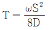
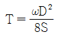
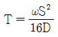
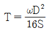
(정답률: 알수없음)
46. 귀선로를 설치할 때 요구되는 기본적인 조건으로 옳지 않은 것은?
- 대지 누설전류가 작아야 한다.
- 필요한 기계적 강도 및 내식성을 가져야 한다.
- 임피던스 본드 등에 단자 취부는 탈락이 없도록 시설 하여야 한다.
- 교·직류방식의 접속점에는 자기교란현상이 발생하도록 시설하여야 한다.
(정답률: 알수없음)
47. 전차선로 지지물에 대한 구비조건이 아닌 것은?
- 내부식성이 우수할 것
- 경제성이 있고 시공이 편리할 것
- 열차 진동에 따른 풀림 등이 있을 것
- 유지보수 측면에서 지지물을 간소화 및 표준화할 것
(정답률: 알수없음)
48. 전기철도에서 집전용 팬터그래프의 구비조건으로 옳지 않은 것은?
- 이선율이 적을 것
- 공기저항을 적게 하고 소음이 적을 것
- 집전판과 전차선의 접촉점에서 큰 유효질량을 가질 것
- 열차당 팬터그래프 수를 최소화하고 충분한 거리를 유지할 것
(정답률: 알수없음)
49. 전철 변전소에 사용되는 전기기기의 번호 “76”에 해당되는 것은?
- 단로기
- 지락선택계전기
- 거리계전기
- 직류과전류계전기
(정답률: 알수없음)
50. 전차선로 구성이 전차선과 레일만으로 된 것과 레일과 병렬로 별도의 귀선을 설치한 2가지의 방식이 있는 전기 철도 급전방식은?
- 제3궤조식
- 흡상변압기방식
- 직접급전방식
- 단권변압기방식
(정답률: 알수없음)
51. 교류급전방식에서 작업시 또는 사고시에 정전구간의 단축을 위하여 개폐장치를 설치한 곳을 무엇이라 하는가?
- 타이포스트
- 보조급전구분소
- 급전구분소
- 단말보조급전구분소
(정답률: 알수없음)
52. 강체 전차선로에서 알루미늄 T-bar를 상호 연결하는데 어떤 용접방법을 사용하는가?
- 산소용접
- 아크용접
- 스폿용접
- 아르곤가스용접
(정답률: 알수없음)
53. 흡상변압기 급전방식에서 사용하는 흡상변압기의 설치목적은?
- 전자유도의 발생
- 통신유도장해 경감
- 전압강하의 방지
- 전차선 접압의 변성
(정답률: 알수없음)
54. 인류구간의 길이가 몇 m를 넘을 때 활차식 자동장력조정 장치를 양쪽에 설치하는가?
- 300
- 500
- 600
- 800
(정답률: 알수없음)
55. 조가선의 접속방법이 아닌 것은?
- 바인드에 의한 접속
- B금구에 의한 접속
- 압축 슬리브에 의한 접속
- 쐐기형 클램프에 의한 접속
(정답률: 알수없음)
56. 전차선로는 어느 정도의 탄성을 가지고 있기 때문에 고속 운전을 위해서는 탄성을 가능한 낮추어야 한다. 다음 중 탄성율(e)을 구하는 식으로 옳은 것은? (단, S는 전주의 경간, Ff는 전차선의 장력, Ft는 조가선의 장력, K는 상수이다.)
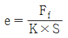
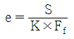
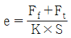
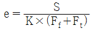
(정답률: 알수없음)
57. 전차선로의 파동전파속도(C)를 구하는 식은? (단, T는 전차선의 장력이고, L은 전차선의 단위질량이다.)
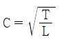
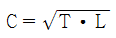
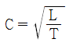
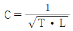
(정답률: 알수없음)
58. 가공전차선로 지지점에서의 전차선 압상량을 구하는데 적용되지 않는 것은?
- 전차선 장력
- 행거 개수
- 조가선 장력
- 팬터그래프 개수
(정답률: 알수없음)
59. 다음 중 전차선 굵기글 결정시 고려하는 사항으로 가장 거리가 먼 것은?
- 허용전류
- 기계적 강도
- 전압강하
- 전차선의 단면형상
(정답률: 알수없음)
60. 3상 전원에서 용량이 큰 단상부하에만 전원을 공급하게 되면 3상 전원은 부하 불평형이 되며, 이를 해소하기 위해 단상 변압기 2대를 사용해서 3상 전원을 2상으로 변환하여 3상 전원을 평형이 되돍 하는데 이 결선방식을 무엇이라 하는가?
- Y-Y 결선방식
- △-△결선방식
- 스코트 결선방식
- Y-△결선방식
(정답률: 알수없음)
4과목: 전기철도구조물공학
61. 그림과 같은 전철설비 표준도 기호가 의미하는 것은?
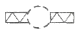
- 수평지선
- 스팬선비임
- 인류용 완철
- 가동브래키트
(정답률: 알수없음)
62. 변전소, 구분소 등에서 급전선, 부급전선 등을 인출하거나 지지하기 위하여 설치하는 고정비임으로 산형강 또는 강관 등을 사용하는 구조의 비임은?
- 평면 비임
- 인류 비임
- 지지 비임
- 스트럭처 비임
(정답률: 알수없음)
63. 애자에 대한 설명으로 옳지 않은 것은?
- 애자의 재질은 자기, 유리(ceramic) 애자와 폴리머 애자를 사용한다.
- 폴리머 애자는 분자량이 1000 이상으로 중합된 고분자 화합물을 말한다.
- 전차선로에 사용하는 애자는 현수애자, 장간애자 및 지지애자를 사용한다.
- 염해 우려지역, 공장지대 등 공해지역에는 현수애자의 경우 수량을 늘려 설치한다.
(정답률: 알수없음)
64. 토지나 지혀의 조건 등으로 인하여 지선을 설치하지 못할 때 지선 대용으로 설치하는 것은?
- 지주
- 전주
- 철주
- 철탑
(정답률: 알수없음)
65. 전차선과 전차선을 연결하는 연결금구로 사용되는 것은?
- 더블이어
- 와이어 크립
- 13s 금구
- 쐐기형 크램프
(정답률: 알수없음)
66. 고(高)장력이 요구되는 고속선의 전선인류용으로서 사용하는 지선은?
- 단지선
- V형지선
- 2단지선
- 수평지선
(정답률: 알수없음)
67. 전차선로에 설치된 단독 지지주에서 지지점의 높이 6.8m인 전차선에 128kgf의 수평집중하중이 작용할 때 지면과의 경계점 모멘트는 몇 kgf·m인가?
- 840.4
- 850.4
- 860.4
- 870.4
(정답률: 알수없음)
68. 구조물에 있어서 부재와 부재의 접합점이 자유로운 절점은?
- 지정 절점
- 이동 절점
- 강결 절점
- 힌지 절점
(정답률: 알수없음)
69. 물체에 외력이 작용하면 내부에는 저항하는 힘이 생긴다. 이와 같이 내부에 일어나는 힘을 내력 또는 응력이라 하는데 응력(σ)의 크기는? (단, P는 외력, A는 단면적이다.)
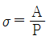
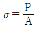
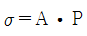
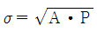
(정답률: 알수없음)
70. 전주 기초에서 페니트로미터(penetrometer)로 측정한 값을 적용하는 경우 전동차 운행시 최대하중에 대하여 변형이 쉬운 불안정한 지반의 안전율은 얼마인가?
- 2.0
- 3.0
- 4.0
- 5.0
(정답률: 알수없음)
71. 다음 중 힘의 3요소를 바르게 짝지은 것은?
- 각도, 방향, 속도
- 방향, 시간, 작용점
- 크기, 압력, 속도
- 크기, 방향, 작용점
(정답률: 알수없음)
72. 인류주 등 차막이 후방에 건식하는 전주는 열차의 제동거리 미확보 등에 의하여 전차선에 중대한 영향을 미치지 않도록 하기 위해 최소 몇 m 이상 이격시켜 건식하여야 하는가?
- 10
- 20
- 30
- 40
(정답률: 알수없음)
73. 구조물을 구성하고 있는 부재가 힘을 받는 상태에 따라 역학적으로 분ㄹb한 휨재에서 축방향으로 압축력만을 받는 구조물은?
- 보(Beam)
- 라멘(Rahmen)
- 트러스(Truss)
- 기둥(Column)
(정답률: 알수없음)
74. 지름이 d인 원형 단며에서 단면 2차 모멘트 산출식은?
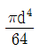
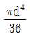
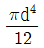
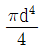
(정답률: 알수없음)
75. 다음의 [설계조건]에 의한 철제 앵커볼트 기초의 최소 볼트개수는 몇 개인가?
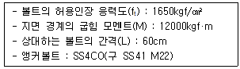
- 4개
- 5개
- 6개
- 8개
(정답률: 알수없음)
76. 지지물의 굽힘에 따른 기울기에 대한 다음 설명 중 ( )안에 들어갈 적절한 숫자는?
- ㉠ 50 ㉡ 25 ㉢ 25
- ㉠ 100 ㉡ 50 ㉢ 50
- ㉠ 150 ㉡ 100 ㉢ 50
- ㉠ 237 ㉡ 110 ㉢ 127
(정답률: 알수없음)
77. 우리나라 일반전철구간에서 곡선 반지름이 500m 이상인 표준경간은 몇 m 인가?
- 20
- 30
- 40
- 50
(정답률: 알수없음)
78. 다음 중 가동 브래키트의 구성에 속하지 않는 것은?
- 경사파이프
- 곡선당김금구
- 수평 주파이프
- 급전선 지지금구
(정답률: 알수없음)
79. 전주 지름의 2배 정도 원형구멍을 굴착한 후 전주가 침하되지 않도록 철근콘크리트제의 바닥판을 여러 개 깔고, 그 위에 전주를 수직으로 세운 다음 굴착한 구멍과 전주의 공간에 파낸 흙과 깬 자갈을 혼합하여 다져 넣은 전철주 기초는?
- 쇄석 기초
- 4각형 기초
- 원형 기초
- 전붙이 기초
(정답률: 알수없음)
80. 구조물의 가해지는 품압(P)을 구하는 식으로 옳은 것은? (단, A는 바람을 받는 물체의 수직 투영면적이며, Vx는 풍속, Cx는 풍력계수이다.)
(정답률: 알수없음)
파장 = v / f
전자파는 빛과 같은 속도로 전파되는데, 이를 전자기파의 속도(c)라고 합니다.
c = 3 x 10^8 [m/s]
따라서,
파장 = c / f
주파수가 100MHz인 경우,
파장 = 3 x 10^8 [m/s] / 100 x 10^6 [Hz]
= 3 [m]
따라서, 100MHz의 전자파의 파장은 3[m]입니다.